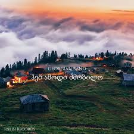

გამარჯობათ, მე ვარ საბა ძიძიკაშვილი და ამ ვებ გვერდში ვეცდები, რომ მოკლედ აგიღწეროთ ჩემი თავი.
მე ვსწავლობ 152 საჯარო სკოლაში, ასევე ვსწავლობ პროგრამირებას GOA-ს აკადემიაში და ასევე ვარ მოქმედი მინი-ლიდერი.
დაბლა თქვენ შეგიძლიათ ნახოთ ჩემი საყვარელი ფილმის ნაწყვეტი:
დაბლა თქვენ დაინახავთ ჩემს საყვარელ სიმღერას და ასევე შეგიძლიათ რომ მას მოუსმინოთ:
